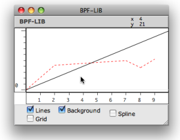

BPF-Lib / BPC-Lib Editors
All the information provided in the BPF and BPC Editor section also apply to BPF-lib and BPC-lib editors.
Editing Curves
All editing operations can be performed upon one curve only. Edition procedures are similar to those used in BPF or BPC editors.
To switch from a curve to another, press the →❘ key.
- The selected curve is displayed in the foreground. Its index and name – if any – appears at the top of the editor.
- The other curves are displayed in the background with dotted lines.
To show or hide background curves, select or unselect the Background option.
Press |
Adding Curves in BPF-lib or BPC-lib Editors
 | To add a curve in a BPF-lib editor :
|
If previous curve hasn't been edited, the new curve is superimposed to it at the foreground. To visualize the new curve, select the curve tool and move the line.
Contrary to BPFs, which initially come with two default points, BPCs come empty.
To add a first BPC :
Select the pointer and
Cmdclick twice in the editor to create a curve. Two points at least must be added in the editor to make a new BPC visible.
To add other BPCs :
SHIFT+Cmdclick outside the line to create a new empty curve. The previous ones go to the background.Cmdclick twice in the editor to add points to the curve.